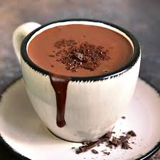

Hot Chocolate

This drink combines cocoa powder, milk, and heavy cream for a delicious result! The touch of cinnamon adds a unique flavor that makes your hot chocolate even tastier. The trick to making the drink very creamy is the presence of cornstarch. When added in the right amount, it makes the hot chocolate thicker without altering the flavor.
- 2 cups (tea) of milk
- 1 tablespoon of cornstarch
- 3 tablespoons of cocoa powder
- 4 tablespoons of sugar
- 1 cinnamon stick
- 1 can of heavy cream
- In a blender, blend the milk, cornstarch, cocoa powder, and sugar.
- Pour the mixture into a saucepan with the cinnamon stick and bring to a low heat, stirring constantly until it boils.
- Turn off the heat, add the heavy cream, and stir well until combined.
- Remove the cinnamon stick and serve hot.